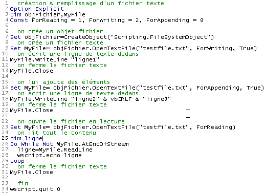

6. Les fichiers texte
Un fichier texte est un fichier contenant des lignes de texte. Examinons la création et l'utilisation de tels fichiers sur des exemples.
6.1. Création et utilisation
Programme |
|  |
Résultats |
Commentaires
- la ligne 7 crée un objet fichier de type "Scripting.FileSystemObject" par la fonction CreateObject("Scripting.FileSystemObject"). Un tel objet permet l'accès à tout fichier du système pas simplement à des fichiers texte.
- la ligne 9 crée un objet "TextStream". La création de cet objet est associée à la création du fichier testfile.txt. Ce fichier n'est pas désigné par un nom absolu du genre c:\dir1\dir2\....\testfile.txt mais par un nom relatif testfile.txt. Il sera alors créé dans le répertoire d'où sera lancée la commande d'exécution du fichier.
- le système de fichiers du système windows n'a pas connaissance de concepts tels que fichier texte ou fichier non texte. Il ne connaît que des fichiers. C'est donc au programme qui exploite ce fichier de savoir s'il va le traiter comme un fichier texte ou non.
- La ligne 9 crée un objet d'où la commande set utilisée pour l'affectation. La création d'un objet fichier texte passe par la création de 2 objets :
- la création d'un objet Scripting.FileSystemObject (ligne 7)
- puis par la création d'un objet "TextStream" (fichier texte) par la méthode OpenTextFile de l'objet Scripting.FileSystemObject qui admet plusieurs paramètres :
- le nom du fichier à gérer (obligatoire)
- le mode d'utilisation du fichier. C'est un entier avec 3 valeurs possibles :
- 1 : utilisation du fichier en lecture
- 2 : utilisation du fichier en écriture. S'il n'existe pas déjà et si le 3ième paramètre est présent et a la valeur true, il est créé sinon il n'est pas. S'il existe déjà, il est écrasé.
- 8 : utilisation du fichier en ajout, c.a.d. écriture en fin de fichier. Si le fichier n'existe pas déjà et si le 3ième paramètre est présent et a la valeur true, il est créé sinon il n'est pas.
- la ligne 11 écrit une ligne de texte avec la méthode WriteLine de l'objet TextStream créé.
- la ligne 13 "ferme" le fichier. On ne peut alors plus écrire ou lire dedans.
- la ligne 16 crée un nouvel objet "TextStream" pour exploiter le même fichier que précédemment mais cette fois-ci en mode "ajout". Les lignes qui seront écrites le seront derrière les lignes existantes.
- la ligne 18 écrit deux nouvelles lignes sachant que la constante vbCRLF est la marque de fin de ligne des fichiers texte.
- la ligne 20 ferme de nouveau le fichier
- la ligne 23 le rouvre en mode "lecture" : on va lire le contenu du fichier.
- La ligne 27 lit une ligne de texte avec la méthode ReadLine de l'objet TextStream. Lorsque le fichier vient d'être "ouvert", on est positionné sur la 1ère ligne de texte de celui-ci. Lorsque celle-ci a été lue par la méthode ReadLine, on est positionné sur la seconde ligne. Ainsi la méthode Readline non seulement lit la ligne courante mais "avance" ensuite automatiquement à la ligne suivante.
- Pour ligne toutes les lignes de texte, la méthode ReadLine doit être appliquée de façon répétée dans une boucle. Celle-ci (ligne 26) se termine lorsque l'attribut AtEndOfStream de l'objet TextStream a la valeur true. Cela signifie alors qu'il n'y a plus de lignes à lire dans le fichier.
6.2. Les cas d'erreur
On rencontre deux cas d'erreur fréquents :
- ouverture en lecture d'un fichier qui n'existe pas
- ouverture en écriture ou ajout d'un fichier qui n'existe pas avec comme le troisième paramètre à false dans l'appel à la méthode OpenTextFile.
Le programme suivant montre comment détecter ces erreurs :
6.3. L'application IMPOTS avec un fichier texte
Nous reprenons l'application de calcul de l'impôt en supposant que les données nécessaires au calcul de l'impôt sont dans un fichier texte appelé data.txt :
Les trois lignes contiennent respectivement les données des tableaux limites, coeffR et coeffN de l'application. Grâce à la modularisation de notre application, les modifications interviennent essentiellement dans la procédure getData chargée de construire les trois tableaux. Le nouveau programme est le suivant :
Programme | ||
|
Commentaires :
- dans le fichier texte data.txt, les valeurs peuvent être séparées par un ou plusieurs espaces, d'où l'impossibilité d'utiliser la fonction split pour récupérer les valeurs de la ligne. Il a fallu passer par une expression régulière
- la fonction getData rend, outre les trois tableaux limites, coeffR, coeffN, un résultat indiquant s'il y a eu erreur ou non. Ce résultat est un variant tableau de eux éléments. Le premier élément est un code d'erreur (0 si pas d'erreur), le second le message d'erreur s'il y a eu erreur.
- la fonction getData ne teste pas la validité des valeurs trouvées dans le fichier data.txt. En situation réelle, elle devrait le faire.